C++ repository organization and CMake
A scientific program should make it easy to locate a calculation, test it and run it on new inputs. This page shows how to organize a small C++ program, compile it by hand and describe the same build with CMake.
The example reads two coordinates from a text file and writes their Euclidean norm to a second file. For the input 3 4, the expected result is 5.
1. Organize code by responsibility
Start with the path your data takes through the program. In the FEM project, main() reads the arguments and coordinates the work. A mesh reader turns a file into mesh data. The numerical code takes those data, assembles and solves the system, and returns the result. A writer saves the result for visualization.
Keep computation separate from file handling. A numerical function should take the data it needs and return its result. It can then be tested with a few values or a tiny mesh constructed in memory. Test mesh reading and result writing separately with small files.
Keep dependencies easy to follow. The executable can call the library, and the tests can call that same library. The calculation needs no knowledge of command-line arguments, output paths or the tests. When adding a feature, ask which component should own it and what information it needs from the others.
Keep related files together. In this example, vector_norm.hpp declares what callers can use and vector_norm.cpp defines what the function does. Keep them side by side in src/. Include the header where you call the function and in the file that implements it. Document assumptions about inputs and results at the interface.
A small project can start with one library target, one executable and one CMakeLists.txt:
project/
├── CMakeLists.txt
├── src/
│ ├── vector_norm.hpp # Library interface
│ └── vector_norm.cpp # Library implementation
├── app/
│ └── main.cpp # Executable entry point
├── tests/ # Test programs and small fixtures
├── meshes/ # FEM input meshes
└── README.adoc # Build, test and run instructions|
Alternative layout for public headers
A project can keep public headers under |
As the FEM project grows, group related files by responsibility. For example, put mesh reading in src/mesh/ and assembly in src/assembly/, with each component’s headers and implementations together. Create a separate CMake target when you need to build or reuse that component independently.
What do the preprocessor, compiler and linker do?
The c++ command coordinates several tools when you build a program.
- Preprocessor
-
Prepares one source file at a time. When it sees
#include "vector_norm.hpp"inmain.cpp, it inserts the header contents so the compiler can see the function declaration. It also handles directives such as#define. A missing header is reported at this stage. - Compiler
-
Checks the prepared C++ code for issues such as a syntax error or a wrong argument type, then translates it into instructions. The assembler packages those instructions into an object file such as
main.o. The option-cstops the build at this file. - Linker
-
Connects references in object files to definitions in other object files or libraries. Here it connects the call in
main.oto the implementation invector_norm.oand produces the executable. If you omitvector_norm.ofrom the manual link command, you get an error such asundefined referenceorundefined symbol.
After creating the files below, use -E to stop after preprocessing:
c++ -std=c++17 -Isrc -E app/main.cppLook for the declaration double vector_norm(double x, double y); among the expanded includes.
2. Tools
Start from the C++ environment exercise. On Ubuntu 24.04, install the following on a machine where you can install system packages:
sudo apt update
sudo apt install build-essential cmake ninja-build libeigen3-devUse a C17-capable compiler, CMake 3.22 or later, and Ninja for the examples in this sequence. Use the C standard specified in your own project brief when applying the exercise to FEM.
3. Separate the calculation from file handling
In a practice directory, declare the function in src/vector_norm.hpp:
#pragma once
double vector_norm(double x, double y);Put the implementation in src/vector_norm.cpp:
#include "vector_norm.hpp"
#include <cmath>
double vector_norm(double x, double y) {
return std::hypot(x, y);
}Put the executable entry point in app/main.cpp:
#include "vector_norm.hpp"
#include <cmath>
#include <fstream>
#include <iostream>
#include <string>
int main(int argc, char* argv[]) {
if (argc != 3) {
std::cerr << "Usage: vector-norm INPUT OUTPUT\n";
return 2;
}
std::ifstream input(argv[1]);
double x, y;
std::string extra;
if (!(input >> x >> y) || !std::isfinite(x) || !std::isfinite(y) || (input >> extra)) {
std::cerr << "Expected two finite numbers in " << argv[1] << '\n';
return 1;
}
std::ofstream output(argv[2]);
output << vector_norm(x, y) << '\n';
output.close();
if (!output) {
std::cerr << "Could not write " << argv[2] << '\n';
return 1;
}
}main() handles arguments, file paths and errors. The library takes numbers and returns a number. This lets a test call the calculation directly.
4. Compile and link once by hand
mkdir -p build
c++ -std=c++17 -c src/vector_norm.cpp -o build/vector_norm.o
c++ -std=c++17 -Isrc -c app/main.cpp -o build/main.o
c++ build/main.o build/vector_norm.o -o build/vector-norm
mkdir -p samples out
printf '3 4\n' > samples/vector.txt
./build/vector-norm samples/vector.txt out/norm.txt
cat out/norm.txtThe first two compiler commands each produce an object file. The second uses -Isrc so app/main.cpp can find the library header. The last command links both objects into an executable. Try the link command without build/vector_norm.o and locate the missing symbol in the error message. Add /build/ and /out/ to .gitignore before committing.
5. Build with CMake
What does CMake do?
CMake is a widely used tool for configuring C builds. You describe what to build in `CMakeLists.txt`. A *target* is a named item in that description, such as the `vector_norm` library or the `vector-norm` executable. Each target records its source files and requirements, including dependencies and the C standard.
During configuration, CMake reads that description, detects the compiler and generates build rules for a tool such as Ninja. During the build, Ninja follows those rules and calls the compiler and linker. When you edit a source file, Ninja uses the dependencies to rebuild the affected files. The same CMakeLists.txt describes the build on your computer and in CI. See the CMake command reference.
5.1. Build one executable
Create CMakeLists.txt at the root of your practice project. Start with one target containing both source files, as in the manual build.
cmake_minimum_required(VERSION 3.22) (1)
project(VectorNorm LANGUAGES CXX) (2)
add_executable(vector-norm app/main.cpp src/vector_norm.cpp) (3)
target_include_directories(vector-norm PRIVATE src) (4)
target_compile_features(vector-norm PRIVATE cxx_std_17) (5)| 1 | Require CMake 3.22 or later. |
| 2 | Name the project VectorNorm and enable the C++ language (CXX). |
| 3 | Compile the two sources and link their object files into the vector-norm executable. |
| 4 | Add src/ to the header search path for this target, just as -Isrc did in the manual command. PRIVATE applies the setting to this target. |
| 5 | Require C++17 or newer when building the executable. |
Configure, build and run from the directory containing CMakeLists.txt:
cmake -S . -B build/basic -G Ninja
cmake --build build/basic
./build/basic/vector-norm samples/vector.txt out/norm.txt
cat out/norm.txtExpected result: 5, just as in the manual build.
Read the configure and build options
| Option | What it does here |
|---|---|
|
Use the current directory ( |
|
Put generated build rules, object files and binaries in |
|
Generate rules for Ninja, the build tool installed above. |
|
Run the build tool with the rules that were generated in |
How do Make and Ninja build in parallel?
Make and Ninja read the rules generated by CMake. The rules say what each job needs and which file it produces. Both tools skip steps whose outputs are up to date. They can start independent jobs at the same time and wait where one job needs the result of another.
| Build tool | File generated by CMake | Parallel jobs |
|---|---|---|
Ninja |
|
Runs jobs in parallel by default. Use |
GNU Make |
|
Runs one job at a time by default. Use |
In the two-source example, each compile job can start without waiting for the other. Linking can start only when both object files are ready.

Try the same job limit through CMake with either generator. Use --clean-first to see both compile jobs again in the existing Ninja build. Generate the Make rules in a separate build directory.
cmake --build build/basic --clean-first --parallel 2
cmake -S . -B build/make-basic -G "Unix Makefiles"
cmake --build build/make-basic --parallel 2For an incremental build, run ninja -C build/basic -j2 or make -C build/make-basic -j2 from the project root. With --target vector-norm you can request that executable by name. Use --target help to see targets offered by your build. Later, CPack adds targets for binary and source packages.
5.2. Give the calculation its own target
The calculation will also be used in the tests. Keep the first two lines of CMakeLists.txt and replace the rest with a library target and an executable that links to it:
add_library(vector_norm STATIC src/vector_norm.cpp) (1)
target_include_directories(vector_norm PUBLIC src) (2)
target_compile_features(vector_norm PUBLIC cxx_std_17) (3)
add_executable(vector-norm app/main.cpp) (4)
target_link_libraries(vector-norm PRIVATE vector_norm) (5)| 1 | Build the static library. On Linux its file is libvector_norm.a. |
| 2 | Make src/ available to the library and to targets that use it. This is what PUBLIC means here. |
| 3 | Require C++17 or newer for the library and propagate that requirement to its callers. |
| 4 | Compile the application’s entry point in the executable target. |
| 5 | Make vector_norm a dependency of the executable. The executable uses the library’s public settings and links the library’s compiled code. |
Use a different build directory for Debug. The added option -DCMAKE_BUILD_TYPE=Debug sets a CMake variable at configure time. With Ninja, this selects the Debug configuration, which includes information that helps a debugger match the executable to the source code.
cmake -S . -B build/debug -G Ninja -DCMAKE_BUILD_TYPE=Debug
cmake --build build/debug
./build/debug/vector-norm samples/vector.txt out/norm.txt
cat out/norm.txtVerify that the result is still 5. In the testing section, a test program will link against the same vector_norm library.
|
Observe what is rebuilt
After changing |
5.3. Declare Eigen as a dependency
Why use find_package for Eigen?
Eigen provides C++ types and functions for linear algebra. We can use it to compute the norm of a vector. When the code says #include <Eigen/Core>, the compiler needs to know where to look for that header, just as it needed -Isrc to find vector_norm.hpp in the manual build.
The Eigen headers might be in a different directory on your laptop, in CI and in Docker. Install Eigen in each build environment. During configuration, find_package lets CMake read the package’s description and discover how to use that installation. For Eigen, that description makes the imported target Eigen3::Eigen available. The target carries the header search path. A package for a compiled library can also describe which library files to link.
target_link_libraries tells CMake which of our targets needs those settings. Eigen is header-only, so here that means passing an include directory to the compiler. The package name is Eigen3, the CMake target is Eigen3::Eigen, and the header is Eigen/Core.

Add these lines after the vector_norm library target is defined.
find_package(Eigen3 REQUIRED CONFIG) (1)
target_link_libraries(vector_norm PRIVATE Eigen3::Eigen) (2)| 1 | CONFIG tells CMake to look for the description shipped with Eigen, typically Eigen3Config.cmake. REQUIRED makes configuration fail immediately if CMake cannot find the package. |
| 2 | Apply the settings from Eigen3::Eigen to vector_norm. Use PRIVATE because only vector_norm.cpp uses Eigen. The public header exposes only built-in types. |
Replace the implementation file’s <cmath> include with <Eigen/Core> and change the function body to return Eigen::Vector2d{x, y}.stableNorm();. Configure, build and run again.
cmake -S . -B build/debug -G Ninja -DCMAKE_BUILD_TYPE=Debug
cmake --build build/debug --verbose
./build/debug/vector-norm samples/vector.txt out/norm.txt
cat out/norm.txtLook for the Eigen include directory in the command that compiles vector_norm.cpp. GCC and Clang commonly show it with -isystem. The sample still produces 5.
See the Eigen CMake guide and the CMake find_package reference.
If configuration fails at find_package, check that the Eigen development package is installed where CMake runs. For a custom installation, add -DCMAKE_PREFIX_PATH=/path/to/eigen-prefix to the configure command, using the directory under which Eigen was installed.
6. Exercise and self-check
Open an issue for building one runnable FEM target from a clean clone. Create a branch such as build-cmake, separate one reusable calculation or mesh operation from main(), and document the dependencies and exact commands in the README. Open a PR linked with Closes #N. In the PR, show the configure, build and run commands and the output you obtained. Self-review the diff before merging.
Continue with C++ tests and CI.